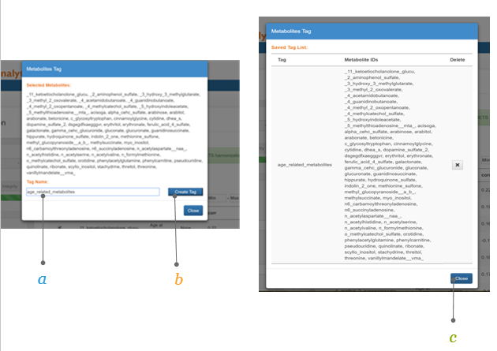

Chapter 2 Conduct Cohort Data Analyses
The chapter describes the step by step the process of conducting cohort analyses for correlation analyses. YOu will need to have an account set-up (see [Account Registration]) and have the sample input file (see Sample Input file).
2.1 Step 1 Data Preparation
Each cohort is required to assemble their data into the standard excel format from a variety of sources (xls, stata, sas, or r). File is used for harmonization and analyses. There are 5 sheets that are required. The detailed requirements are outlined below.
2.1.1 Metabolites
2.1.2 Subject Metabolites
2.1.3 Subject Data
The SubjectData sheet contains the subject-level covariate data for each sample
a. SubjectData is a sheet in the input file that contains the subject-level covariate data for each sample. Examples include factors such as age, gender, smoking, body mass index, race and education.
b. SAMPLE_ID (column A) contains the sample identifiers.
c. Columns correspond to subject-level covariates, as used in the cohort of origin. Column names are in row 1 and (except the column named SAMPLE_ID) must match the entries in the column COHORTVARIABLE from the sheet VarMap.
d. Rows correspond to observations, with each row containing all of the subject-level covariate values for a given sample. Row names (i.e., SAMPLE_ID) are required to match the row names in the sheet SubjectMetabolites.
e. Cells contain subject-level covariate values. 
tufte::margin_note("<span class='texta'>**a.Describe Model: **</span> Name your model
<br> <br>
<span class='textb'>**b.Select Exposure: ** </span> i.e. your independent variable(s) of interest from the drop down list; the drop down options will include all the variables in your ‘VarMap’. The beta coefficient for this variable will be returned in the results
<br> <br>
<span class='textc'>**c.Select your outcome: **</span> i.e. your dependent variable(s) of interest from the drop down list
<br> <br>
<span class='textd'>**d.Adjusted covariates**</span> Select any variables from the drop down that are potential confounders and should be included in the model (optional)
<br> <br>
<span class='texte'>**e.Strata by **</span> for stratified analyses only. Select variable, and results will be returned for all strata within this variable (optional)
<br> <br>
<span class='texte'>**f.Where**</span> If analysis will only be run on a sunset of the cohort as defined by this variable. A where statement can be constructed using the ‘operator’ and ‘Compare to’ (eg. Age <18) (optional)
<br> <br>
<span class='texte'>**g.Run Model **</span> Click to run model. Or click rest to clear the work space and start a new model
<br> <br>
<span class='texte'>** Timing **</span> Depending on the size of your data, the complexity of the model and the current analysis load on the server this may take a few seconds or a few minutes.
")## [1] "<label for=\"tufte-mn-\" class=\"margin-toggle\">⊕</label><input type=\"checkbox\" id=\"tufte-mn-\" class=\"margin-toggle\"><span class=\"marginnote\"><span class='texta'>**a.Describe Model: **</span> Name your model\n <br> <br>\n <span class='textb'>**b.Select Exposure: ** </span> i.e. your independent variable(s) of interest from the drop down list; the drop down options will include all the variables in your âVarMapâ. The beta coefficient for this variable will be returned in the results \n <br> <br>\n <span class='textc'>**c.Select your outcome: **</span> i.e. your dependent variable(s) of interest from the drop down list\n <br> <br>\n <span class='textd'>**d.Adjusted covariates**</span> Select any variables from the drop down that are potential confounders and should be included in the model (optional)\n <br> <br>\n <span class='texte'>**e.Strata by **</span> for stratified analyses only. Select variable, and results will be returned for all strata within this variable (optional)\n <br> <br>\n <span class='texte'>**f.Where**</span> If analysis will only be run on a sunset of the cohort as defined by this variable. A where statement can be constructed using the âoperatorâ and âCompare toâ (eg. Age <18) (optional)\n <br> <br>\n <span class='texte'>**g.Run Model **</span> Click to run model. Or click rest to clear the work space and start a new model\n <br> <br>\n <span class='texte'>** Timing **</span> Depending on the size of your data, the complexity of the model and the current analysis load on the server this may take a few seconds or a few minutes.\n \n </span>"2.1.4 Varmap
The VarMap sheet maps the cohort variable names to the COMETS internal variable names Example: The cohort variable “bmi” would be mapped to the COMETS internal variable “bmi_grp” and must be coded as “0” for BMI<18.5, “1” for BMI 18.5 to <25, “2” for BMI 25 to <30, “3” for BMI 30.0+, and “4” for if missing as defined in the column “VARDEFINITION”
a. VarMap is a sheet in the input file that gives the original cohort variable names and the COMETS internal variable names.
b. VARREFERENCE refers to the internal COMETS variable names.
c. VARDEFINITION defines how the variables should be coded.
d. COHORTVARIABLE correspond to the original cohort variable name.
e. COHORTNOTES gives additional info e.g. for some variables (e.g. “age”, “female”), missing values are not allowed. 
2.2 Step 2 Harmonization
The harmonization step will assess whether your cohorts metabolites are available in the master metabolites list so that a universal ID (named UID_01) can be associated with your metabolites. The COMETS master metabolite list is maintained by IMS and can be sent in advance of the analyses to ensure availability of a universal ID for each of your metabolites. The universal ID (currently named UID_01) ensures alignment of metabolites across the different cohorts to ensure identification for meta-analysis. Metabolite harmonization is made possible by maintaining an up-to-date master list of metabolites across platforms and cohorts to establish a universal metabolite ID. This activity is managed by the data harmonization work group and IMS. In order to maximize harmonization of metabolites, it is important to include as much information (ie. metabolite metadata) in the input file such as HMDB ID, KEGG ID, or other identifiers.
The harmonization step produces an output file that needs to be sent to comets.analytics@gmail.com to keep track of harmonization rates.
2.2.1 Harmonization file
The names of metabolites inputted into the software are automatically harmonized to a common name. This important feature facilitates comparison of metabolites across different studies that use different platforms and/or naming conventions.
a. metabid (column B) corresponds to metabolite IDs as defined by each individual cohort. The metabolite IDs correspond to the column metabid from the Sheet Metabolites of the input file.
b. metabolite_names (column C) corresponds to metabolite names as defined by each individual cohort. The metabolite names correspond to the column metabolite_name from the sheet Metabolites of the input file.
c. Columns c(except A and B) correspond to metabolite meta-information that was either already present in the input file or was matched from the internal COMETS database. We highly recommend to add at least on public database identifier (e.g. HMDB ID).
d. Rows correspond to metabolites, with each row containing all available meta-information for one metabolite.

2.3 Step 3 Data and Model Integrity
Data integrity checks are run to ensure the appropriate data are presented for analyses. The following conditions are checked:
- Missing Subject ID or Metabolite ID in the Varmap sheet
- Subject ID or Metabolite ID provided in Varmap sheet do not correspond to a column in “Metabolites” and “SubjectData” sheets, respectively
- Metabolites ids in Metabolites and SubjectMetabolites sheet do not match
- Subject ids in SubjectData and SubjectMetabolites sheet do not match
If any of the following conditions failed, the analyses will be suspended and corrections to the data are required. The data integrity checks will also flag the following but will proceed with the analyses:
- Number of subjects in “SubjectData” and “SubjectMetabolites” sheets do not match
- Metabolite abundances from “SubjectMetabolites” contains duplicate columns (metabolites) or rows (subjects)
- There are duplicate subject ids in Subject Information “SubjectData” sheet
- There are duplicate metabolite ids in Metabolite Information “Metabolites” sheet
Models are also validated using xx.
2.4 Step 4 Model Specification
2.4.1 Create input file: Model specification
Specify the Analytical Models you wish to Run In this example. Model “2.1” is named “Gender stratified” and the analysis will be run with “age” as the exposure and “All metabolites” as the outcomes while adjusting for smoking status (“smk_grp”), BMI (“bmi_grp”), race (“race_grp”), education (“educ_grp”), alcohol consumption (“alc_grp”), multivitamin use (“multivitamin”), hormonal status (“horm_curr”) and fasting status (“fasted”). This analysis will be stratified by gender using the internal COMETS variable “female”.
a.Modelsis a sheet in the input file that contains the models to be run on the cohort data.
b.MODEL contains the model number and the model name. The results files will be named according to the chosen model name.
c.OUTCOME specifies which variable(s) will be the dependent variable(s).
d.EXPOSURE specifies the independent variable of interest. The beta coefficient for this variable will be returned in the results
e.ADJUSTMENT specifies the potential confounders to be included in the model (optional).
f.STRATIFICATION for stratified analyses only. Results will be returned for all strata within this variable (optional)
g.WHERE If the analysis is meant to be run on only a subset of the cohort, this column will contain the subset definition (e.g., “female==1” for an analysis stratified by hormone therapy use). (optional)

{kind=link}
2.4.2 Interactive
2.4.2.1 Running Analyses: Interactive mode
Allows you to run individual models; to specify model parameters; and to receive instantaneous results
a.Confirm data upload was successful and the data has passed COMETS integrity check.
b.Select Interactive user input as Method of Analyses.

2.4.2.2 Running Analyses: Specifying Interactive Mode Models
Specifying your model
margin_note("<span class='texta'>**a.Describe Model: **</span> Name your model
<br> <br>
<span class='textb'>**b.Select Exposure: ** </span> i.e. your independent variable(s) of interest from the drop down list; the drop down options will include all the variables in your ‘VarMap’. The beta coefficient for this variable will be returned in the results
<br> <br>
<span class='textc'>**c.Select your outcome: **</span> i.e. your dependent variable(s) of interest from the drop down list
<br> <br>
<span class='textd'>**d.Adjusted covariates**</span> Select any variables from the drop down that are potential confounders and should be included in the model (optional)
<br> <br>
<span class='texte'>**e.Strata by **</span> for stratified analyses only. Select variable, and results will be returned for all strata within this variable (optional)
<br> <br>
<span class='texte'>**f.Where**</span> If analysis will only be run on a sunset of the cohort as defined by this variable. A where statement can be constructed using the ‘operator’ and ‘Compare to’ (eg. Age <18) (optional)
<br> <br>
<span class='texte'>**g.Run Model **</span> Click to run model. Or click rest to clear the work space and start a new model
<br> <br>
<span class='texte'>** Timing **</span> Depending on the size of your data, the complexity of the model and the current analysis load on the server this may take a few seconds or a few minutes.
")## [1] "<label for=\"tufte-mn-\" class=\"margin-toggle\">⊕</label><input type=\"checkbox\" id=\"tufte-mn-\" class=\"margin-toggle\"><span class=\"marginnote\"><span class='texta'>**a.Describe Model: **</span> Name your model\n <br> <br>\n <span class='textb'>**b.Select Exposure: ** </span> i.e. your independent variable(s) of interest from the drop down list; the drop down options will include all the variables in your âVarMapâ. The beta coefficient for this variable will be returned in the results \n <br> <br>\n <span class='textc'>**c.Select your outcome: **</span> i.e. your dependent variable(s) of interest from the drop down list\n <br> <br>\n <span class='textd'>**d.Adjusted covariates**</span> Select any variables from the drop down that are potential confounders and should be included in the model (optional)\n <br> <br>\n <span class='texte'>**e.Strata by **</span> for stratified analyses only. Select variable, and results will be returned for all strata within this variable (optional)\n <br> <br>\n <span class='texte'>**f.Where**</span> If analysis will only be run on a sunset of the cohort as defined by this variable. A where statement can be constructed using the âoperatorâ and âCompare toâ (eg. Age <18) (optional)\n <br> <br>\n <span class='texte'>**g.Run Model **</span> Click to run model. Or click rest to clear the work space and start a new model\n <br> <br>\n <span class='texte'>** Timing **</span> Depending on the size of your data, the complexity of the model and the current analysis load on the server this may take a few seconds or a few minutes.\n\n </span>" # print('<a href="static/output_interactivemode_2.png"><img src="static/output_interactivemode_2.png" style="width: 60%"></a>')2.4.2.3 Running Analyses: Exploring Interactive Mode Output
Exploring your output
a.Correlation Results: Check correlation analyses was successful – if so ‘download results’ and forward to the COMETS harmonization group who will utilize these for the meta-analyses
b.Specified model parameters: as defined in the interactive mode
c.Correlation Coefficient: Spearman Rank correlation coefficient between the specified outcome and the exposure (adjusting for the adjvars,and by strata if applicable)
d.p-value Significance level for the correlation coefficient
e.n number of samples included in the specified model
f.Tag Select metabolites for further analysis. Creates a subset of metabolites than can then be specified in the interactive output
Explore Further To explore further results can be ordered according to name of outcome, of exposure or of adjvars, by correlation coefficient, p-value or n. Alternatively, you can use the search boxes to search for specific metabolites ofrdefine thresholds

2.4.3 Batch
All Models is a special run of the prespecified models. IN this mode, all models are run in a queue and you will get the results via email.
2.5 Step 5 Correlation Analyses Output
After running your correlation analyses by Interactive mode or Batch mode, results are available under the correlation results and heatmap tabs. For other types of analyses, see Technical Details. Some of the interactive features of the results and heatmap are described below.
2.5.1 Metabolite tagging
The metabolite tagging is a feature TAG’ option in the correlate and heatmap tab to select and create a subset of metabolites for further analysis based on analyses results for further investigation. Once tagged, the list of metabolites can be used in interactive mode to specify other analyses to conduct.
To select and create a subset of metabolites for further analysis based on the correlation results the ‘TAG’ function can be used. Below an example with age (exposure) and metabolites (outcome) as run in the ‘interactive user input’ correlate tab
a. Set level of significance: in this example the level of significance is defined as p<0.00001.
b. Select significant metabolites: by ticking the box all significant metabolites are selected.
c. TAG metabolites: by ticking the ‘TAG’ box all selected metabolites are automatically marked . 
2.5.2 Create subset of ‘Tagged’ metabolites
Once the ‘TAG’ button is clicked a screen will appear
a. Name your ‘TAG: give the subset of metabolites a name (e.g. “Age_related_metabolites”).
b. Create ‘TAG’: click the button ‘create Tag’ to create the tag.
c. ‘TAG’ is created: A new box appears with an overview of your tagged metabolites. Close the newly created ‘TAG’. 
2.5.3 Create A heatmap
Go back to the ‘Interactive user input’ and select your newly created subset, using the ‘TAG’ function
a. Select your exposure: select the newly created ‘Age_related_metabolites’ ‘TAG’.
b. Select your outcome: select the newly created ‘Age_related_metabolites’ ‘TAG’.
c. Run the model: click the run button.
d. Heatmap select the heatmap tab to view the heatmap. 
2.5.4 The heatmap
Exposures are specified on the X axis and the outcomes on the Y axis. Different features are available in this interface:
a. Sort by outcome: The display of the heatmap can be sorted by outcome or exposure (in the ‘Outcomes Sort by’ box).
b. Sort by strata: When a stratified analysis is performed, the display of the heatmap can be sorted by the different strata (in the ‘Strata sort by’ box).
c. Choose your color: In the ‘Palette’ box different color schemes for the heatmap can be selected.
d. Adjust plot height and width The ‘Plot height’ and “Plot width’ can be adjusted for in the respective boxes. 
2.5.5 The heatmap (2)
Additional features of the heatmap can be choosen
a. Additional toolbar: when moving the mouse in the top right corner of the graph an extra toolbar will be visible which allows you to:
Download plot as png
Save and edit plot in cloud
Zoom
Pan
Zoom in
Zoom out
Autoscale
Reset axes
Use Plotly features (Toggle Spike Lines, Show closest data on hover, Compare data on hover)

2.5.6 Annotations and hierarchical clustering
Annotations (display of the correlation coefficients in numbers) and hierarchical clustering (showing the metabolite clusters) can be superimposed on the heatmap
a. Annotiations: ticking this box will allow you to display the correlation coefficients in the plot.
b. Hierachical clustering: ticking this box will allow you to display the metabolite clusters on the left side of the heatmap.
c. Choose your dimensions: by clicking e.g. 900*1100 dimensions the plot will show in the chosen dimensions. 

Figure 2.1: Heatmap1
Figure 2.2: Heatmap Controls
For details on output for other models, see output section of each method under Technical Details.